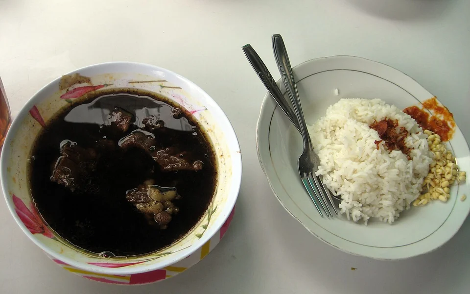
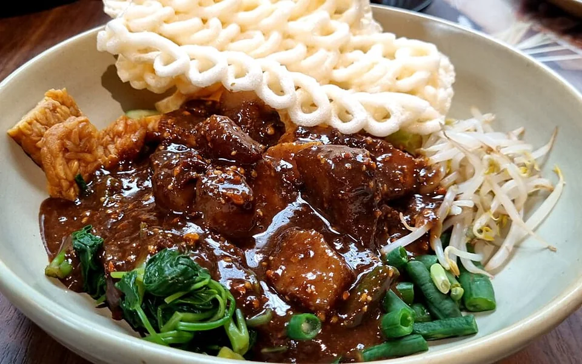
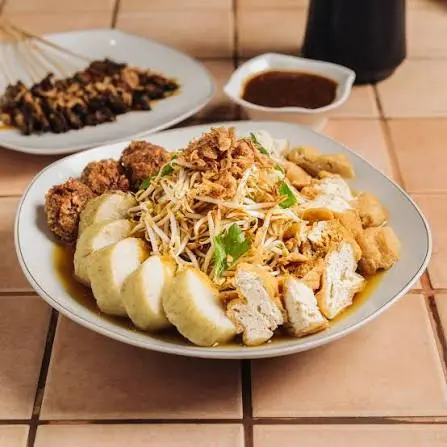
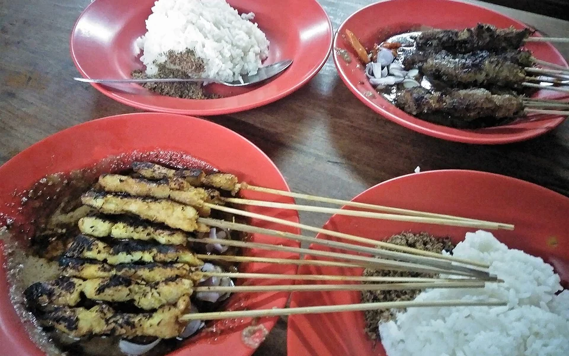
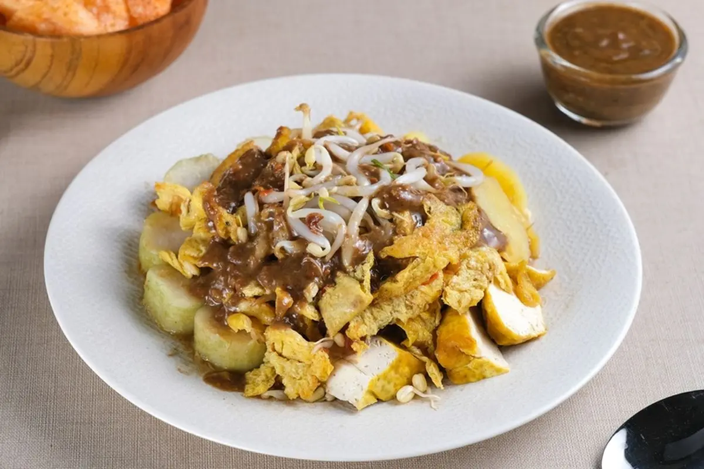

Rawon
Beef soup with a rich, dark broth made with kluwek. Often served with rice and bean sprouts, it is one of East Java's best-known dishes.

Beef soup with a rich, dark broth made with kluwek. Often served with rice and bean sprouts, it is one of East Java's best-known dishes.

A mixture of vegetables, rice cakes, tofu, and cooked beef muzzle dressed with a bold petis sauce. The combination gives this Surabaya specialty its distinctive taste and texture.

Rice cakes, bean sprouts, fried tofu, and lentho come together in a savory broth. It is a comforting local dish with a mix of soft and crunchy textures.

Skewered meat coated in grated coconut and grilled over charcoal. The coconut adds a fragrant, savory layer to this Surabaya take on satay.

Fried tofu, rice cakes, potatoes, and bean sprouts covered in a peanut-and-petis sauce. This hearty street-food dish combines simple ingredients with a full-flavored dressing.

Steamed semanggi leaves and vegetables served with a sweet, savory sauce. Usually paired with crackers, this traditional dish is closely associated with Surabaya.
rawon — christian r from Jakarta, CC BY-SA 2.0; cropped and resized.
rujakcingur — Kakakku keren, CC BY-SA 4.0; cropped and resized.
lontongbalap — Lasthib, CC BY-SA 4.0; cropped and resized.
sateklopo — Fitri Penyalai, CC BY-SA 4.0; cropped and resized.
tahutek — Fhikri Latifi, CC0; cropped and resized.
semanggi — Lasthib, CC BY-SA 4.0; cropped and resized.